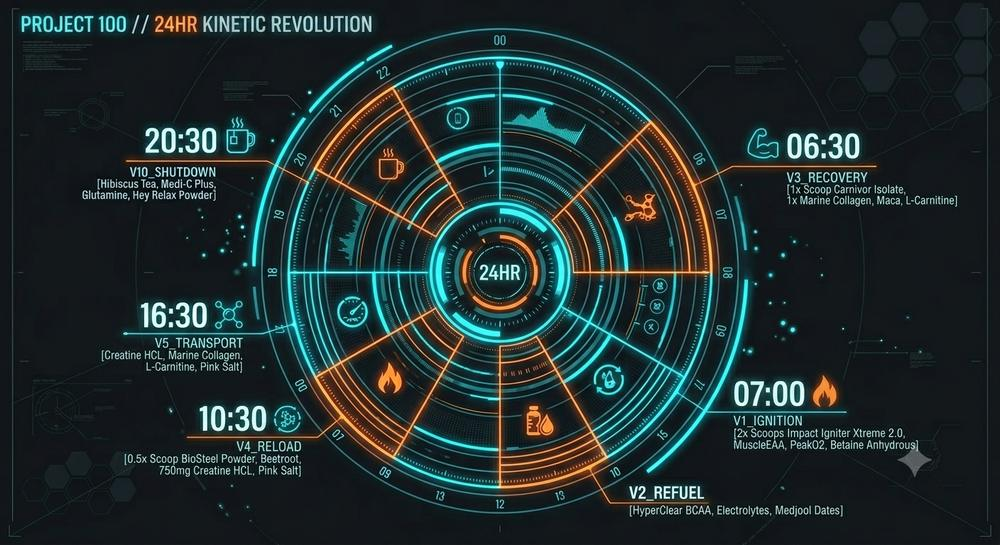
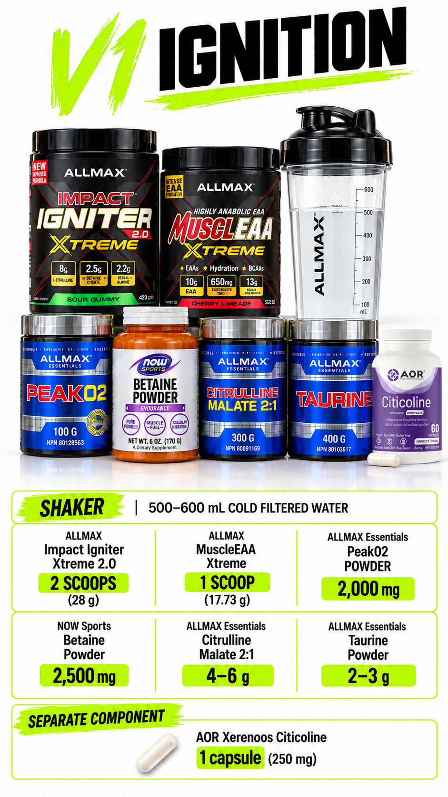
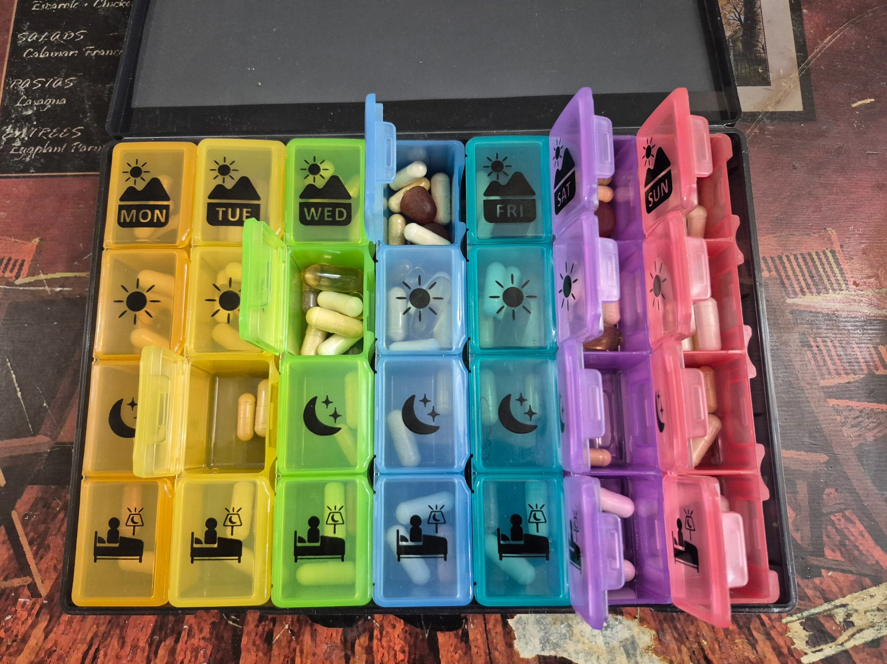

The system behind the goal.
Vector registry · 5 October 2026
Morning: V3, V1, V2, V4, V10. Rest: V3 when consumed, V5, V10. Evening override: V3, V6, V2 during the session, V4 afterward, V10 at night. V1 and V6 are never combined on the same calendar day; both are inactive on rest days. V7–V9 have no supplied records.
V6 supersedes the older unnumbered, permanently inactive PUMP designation. Existing artwork may still say PUMP; the page record and descriptive downloads carry V6.


FILE 02DailyOpen file ↗
FILE 03VectorsOpen file ↗FILE 04NutritionOpen file ↗

FILE 05SupplementsOpen file ↗FILE 06TrainingOpen file ↗FILE 07MonitoringOpen file ↗FILE 08FixesOpen file ↗
Daily guide notes · How to use this V2.0 — and what changed
How to use this V2.0 — and what changed
This Guidebook is the short, runnable derivative of the Project 100 Encyclopedia V2.0 (3 October 2026) — the single master volume that merged the Full Detailed Version and the Complete Clinical Analysis. Nothing in this Guidebook stands outside that master. It does not replace your locked doses or statuses; for nutrition, training, pills, supplements and vectors, each protocol carries what it does, why it can help, where the risk actually lives, and how you monitor it.
What stayed locked (Encyclopedia corrections): Zinc Supreme removed; separate copper paused; boron locked at 1 x 3 mg; V4 fixed at half the BioSteel serving; RapiDrem replaces BioSteel Hydration in V2 and V5; Canadian Carnivor credited with zero added creatine; V10 heating mandate retired; V6 PUMP now has a separate evening-training branch (5 October 2026). This Guidebook explains the locked record — it does not quietly change it.
THE V2.0 ANALYSIS PATTERN (USED IN EVERY CHAPTER)
| Lens | Question it answers |
|---|---|
| Mechanism | How does this actually work in the body? |
| Stack interaction | What does it amplify or collide with elsewhere in the system? |
| Margin | How close are you to the known upper limit or symptom threshold? |
| Monitor | What do you watch, test, or log to stay safe? |
| Stop rule | What symptom or result pauses or removes it? |
Important: This book documents your personal system. It is not medical advice and does not replace your clinician. Any change to prescription medication, or any new symptom, goes to a clinician first. Bring this book to appointments — especially the pill grid and lab pages.
Source of truth: Project 100 Encyclopedia V2.0 — 2026-10-03 (Full Detailed Version + Complete Clinical Analysis merged). Where a number appears below, it is the Encyclopedia number, not a new estimate. Known totals are partial label calculations, not a measured
whole diet; whole-diet verification remains deferred, and the historical 2,780 kcal / 252 g protein / 69 g fat figures are legacy planning figures only.
Source:
Daily guide notes · The System: INTAKE x VECTOR x TIME
The System: INTAKE x VECTOR x TIME
Everything in Project 100 reduces to one equation. Intake is what you take in (food, pills, supplements). Vector is the directed protocol that delivers it (V1–V10). Time is when it happens — and time is where most systems fail, because a good dose at the wrong hour becomes a bad dose.
| Training day | Rest day | |
|---|---|---|
| Priority | Performance + recovery | Repair + tolerance reset |
| Active vectors | V1, V2, V3, V4, V10 — timed to the session | V3 (when consumed), V5 (if consumed), V10 |
| Pill grids | Full training grids at lunch and afternoon | Training pill grids skipped |
| V6 PUMP | Inactive on morning/rest days; State C evening override replaces V1. | Inactive on morning/rest days; State C evening override replaces V1. |
| Nutrition | Higher energy, timed protein | Protein held, energy moderated |
| Monitoring | RPE, HR, session completion | Sleep, HRV, gut, mood |
Analysis lens: Most supplement risk is not dose risk — it is stacking at the same hour. V2.0 therefore analyses every protocol twice: alone, and as stacked. The stacked analysis is the one that governs.
Source: Open the focused protocol file ↗